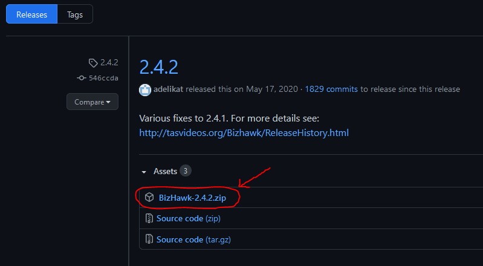
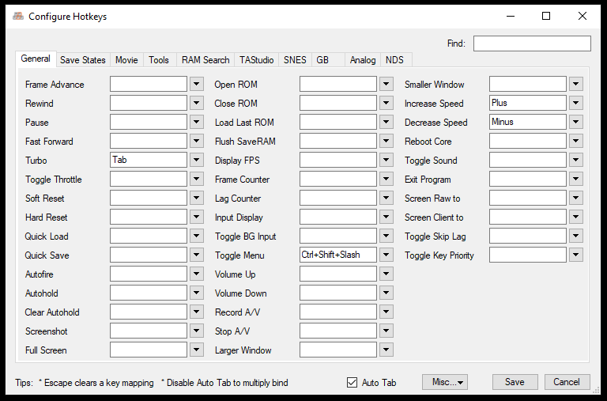
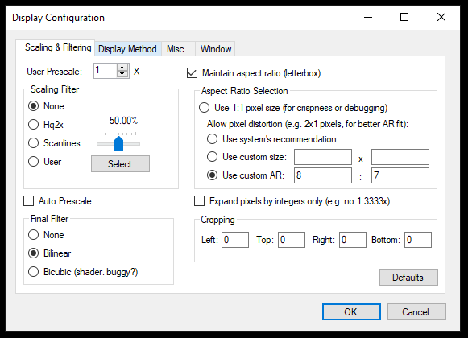
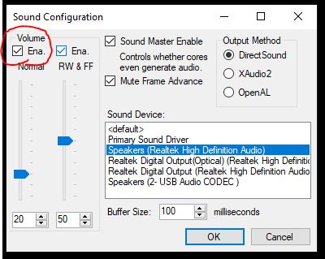

Runner Setup
Before you begin...
We assume you're running Windows 10. If not, check in with us and we'll get you compatible software. If you'd rather see the video tutorial, that's available here.
Getting the EmuHawk (BizHawk) Emulator
In order to emulate retro games, we use the EmuHawk Emulator in the BizHawk suite of tools. If you find there are issues with this (eg, controller acting strangely, etc.) please let us know in the discord and we'll help you debug.
- Download the bizhawk_prereqs ZIP file, which is listed under Assets. After downloading, unzip and install.
-
Download Bizhawk, which is listed
under Assets and looks something like Bizhawk-Numbers.zip (similar to the
image
below). Unzip the file once it has downloaded.
 - Warning: There is currently an issue where Windows 10 thinks that BizHawk is a virus. This is a false positive. Try downloading Version 2.4.2 if your Windows refuses to let you open the latest.
- In the unzipped Bizhawk folder, you'll find a program called EmuHawk.exe. This is the emulator and you can double-click to run it.
Configuring the EmuHawk Emulator
Note: If you'd rather see the video of the config, check our video tutorial.
We'll configure three things in BizHawk.
- Hotkeys
- Display
- Sound
Each of these items can be found in the Config menu at the top of the EmuHawk program. The screenshots below show you what each screen should look like.
For the Sound menu, if you uncheck the box we've circled in red, this will mute the emulator. Note that your sound device might be different than in the image.



Setting Up OBS
OBS is what we use to stream the game to the Sneakbike server (and what many people use to stream to Twitch).
- Download and install OBS.
- Download the Sneakbike Profile for OBS. Unzip this once it is downloaded.
To import this profile, follow the directions below, using the gif below as a guide if you need to.

OBS Profile Import
- In OBS, Go into Profile > Import, navigate to the unzipped Sneakbike folder from the previous steps, click the Sneakbike_Profile folder and hit "open".
- Still in OBS, go into the Profile menu again. You should see (at least) two profiles at the bottom, including Sneakbike.
-
- Clicking on Sneakbike will bring you to the Sneakbike profile we require for racers.
- You can click the original Profile (usually called Untitled) to go back to your normal streaming profile, if you had one.
Racing
Before the race, usually the day-of, we'll give you instructions on how to stream to the correct location and how to set up a scene to have your gameplay broadcast correctly. Don't worry about it for now, but if you're interested ask us in the discord!